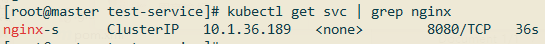
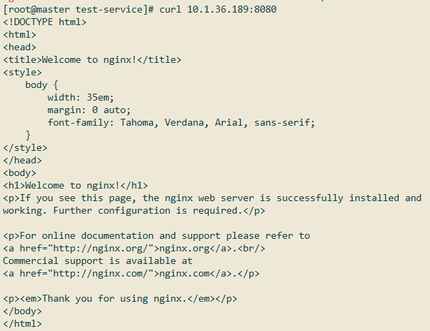
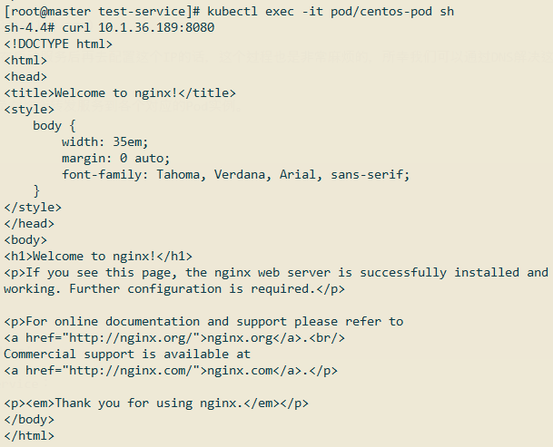
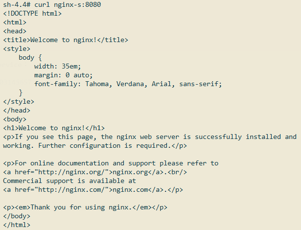
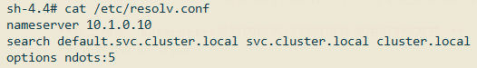
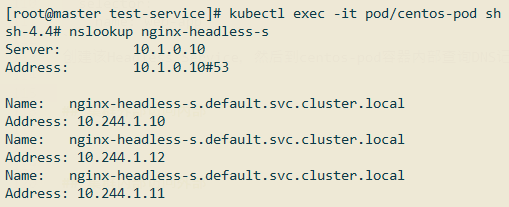
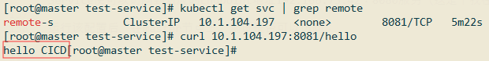
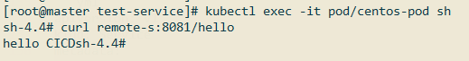

Kubernetes服务发现主要可以归为三种情形：1.Kubernetes集群内部间服务如何互相通信；2.Kuberntes集群外部如何访问集群内部服务；3.Kubernetes集群内部如何访问集群外部服务。这节针对这三种情况做个总结。
集群间服务通信
1.通过Pod IP相互通信，但是Pod具有不确定性，Pod IP会发生改变，所以这种方式并不推荐。
2.部署Pod对应的Service，访问Service IP，请求负载均衡转发服务到各个对应的Pod实例。
比如有如下配置文件demo.yml：
1 | apiVersion: apps/v1 |
运行该配置，查看Service对应的IP：

通过Service IP和端口就能访问对应的Pod服务:

但是我们事先并不知道Service的IP是多少，如果我们在启动服务后再去配置这个IP的话，这个过程也是非常麻烦的，所幸我们可以通过DNS解决这个问题，也就是下面这种方式：
3.部署Pod对应的Service，通过ServiceName，请求负载均衡转发服务到各个对应的Pod实例。
通过下面这段配置部署一个新的Pod服务：
1 | apiVersion: v1 |
进入到该容器内部，测试下是否可以访问上面创建的Service：

试着通过ServiceName访问Nginx服务：

可以看到效果是一样的。这得益于Kube-dns，具体的格式为：<service_name>.<namespace>.svc.<cluster_domain>其中，<cluster_domain>默认值为cluster.local，可以通过kubelet的--cluster-domain=SomeDomain参数进行设置。为了在Pod中调用其他Service，kubelet会自动在容器中创建域名解析配置：

所以除了使用curl nginx-s:8080访问外，以下这些也是等效的：
1 | curl nginx-s.default:8080 |
所以我们现在可以不用事先知道Service的IP了，只要事先知道ServiceName即可（ServiceName是我们自己定义的）。
4.通过Headless Service，返回Pod的所有实例。
有时候我们并不需要Service的负载均衡功能，而是手动获取Service对应的Pod实例，自己决定如何访问。创建一个Headless Service配置：
1 | apiVersion: v1 |
创建该Headless Service，然后到centos-pod容器内部查询DNS记录：

如果没有nslookup命令，可以使用
yum -y install bind-utils命令安装。
可以看到，通过解析nginx-headless-s DNS，返回了三个Nginx Pod实例地址。
集群外部访问内部
1.Pod指定hostPort，或者开启hostNetwork，这样外部就可以通过Pod宿主机IP+Pod端口访问了，但Pod调度的不确定性，这种方式不推荐；
2.通过Service的NodePort暴露服务，如果服务较多的话不推荐，因为这种方式会在集群中的所有节点上都暴露该端口，所以当服务多的时候很容易造成端口冲突，并且端口维护不便；
3.通过Ingress集中暴露服务，要暴露的服务较多的时候推荐。
这三种方式是前面博客中都有介绍到，所以就不赘述了。
集群内部访问外部
1.直接通过外部服务的IP和端口进行访问；
2.通过Service和Endpoint绑定，集群内的服务通过DNS访问集群外部服务（推荐）。
创建如下配置（test-remote.yml）：
1 | apiVersion: v1 |
Service和Endpoints名称一样，所以他们会绑定上，通过访问remote-s Service便可以访问到对应的Endpoint地址192.168.73.42:8080服务（这是个我在集群外部，通过Spring Boot搭建的简单web服务）。
运行该配置后，在master节点上，测试是否可以访问：

我们进到centos-pod容器内部，通过服务名称看看是否可以访问到：

可以看到这种方式也是没问题的，推荐使用这种方式，可以降低耦合度。